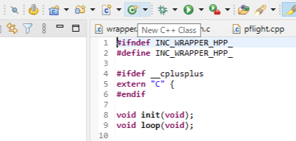

STM32資料 発展編3
実際にクラスを書いてみよう
ここまで学習したクラスを実際に使ってICM45686のクラスを書いてみよう
すべての機能を実装するのは難しいので応用編と同じように
WIA、電源モード設定、データ取得の3つの機能をI2C通信で実装してみよう
また、コンストラクタでI2Cのピン情報を受け取れるようにして使いやすくしよう
一人でやるには難しい内容なので、関数の実装部分だけを書いてもらいますクラスのファイルを作成する
クラスを作成する時は、上のクラスボタンから追加しよう
今回はクラス名(ICM45686)を設定してチェックはすべて外そう
ここから作成すると、何度もインクルードしてバグが起きないようにするためのコードなどが自動で作成される
(このコードはインクルードガードとも呼ばれている)
ICM45686.hpp
ここでは、先ほどの仕様にそって3つのことを行った
やったこと
HAL_I2C_Mem_Read/Writeは引数が多く大変なので、I2Cのピン情報などを自動入力するためにRead/Write関数を作成した
この関数は、メンバー関数が使うだけなのでprivateで宣言している
#ifndef INC_ICM45686_HPP_
#define INC_ICM45686_HPP_
#include "cstdint"
#include "i2c.h"
class ICM45686{
public:
//コンストラクタ
ICM45686(I2C_HandleTypeDef* use_i2c_pin);
//WIAを取得する関数
uint8_t WIA(void);
//電源モードを設定する関数
void PowerON();
//データを取得する関数
void GetSensorData(int16_t accel_data[3], int16_t gyro_data[3]);
private:
//I2Cのピン情報を格納する変数
I2C_HandleTypeDef* i2c_pin;
//I2Cアドレスの定義
uint8_t I2C_ADDR = 0b1101000 << 1; //ICM45686のI2Cアドレス
//書き込みと読み取りの関数
void Read(uint8_t reg, uint8_t* rx_buffer, uint8_t len); //Read関数の宣言
void Write(uint8_t reg, uint8_t* tx_buffer, uint8_t len); //Write関数の宣言
}
#endif;ICM45686.cpp
コンストラクタとRead、Write関数はこちらで書いておきました
クラスで定義した関数を実装するときには、(クラス名)::(関数名)と書く
やったこと
WIA()のコードを参考にして、電源モード設定、データ取得の関数を自分で実装してみよう
#include "ICM45686.hpp"
//コンストラクタの実装
ICM45686::ICM45686(I2C_HandleTypeDef* use_i2c_pin){
i2c_pin = use_i2c_pin; //引数で渡されたI2Cのピン情報をメンバ変数に格納
}
//書き込みの関数
void ICM45686::Write(uint8_t reg, uint8_t* tx_buffer, uint8_t len){
//I2Cの関数を使って、引数で渡されたレジスタにデータを書き込む
HAL_I2C_Mem_Write(i2c_pin, I2C_ADDR, reg, 1, tx_buffer, len, 1);
}
//読み取りの関数
void ICM45686::Read(uint8_t reg, uint8_t* rx_buffer, uint8_t len){
//I2Cの関数を使って、引数で渡されたレジスタからデータを読み取る
HAL_I2C_Mem_Read(i2c_pin, I2C_ADDR, reg, 1, rx_buffer, len, 1);
}
//WIAを取得する関数
uint8_t ICM45686::WIA(){
uint8_t read_value = 0; //WIAの値を格納する変数
//Read関数を使ってWIAレジスタの値を取得する
Read(0x72, &read_value, 1);
//WIAの値が正しいか確認する
if(read_value != 0xE9){
return 1; //正しくない場合は1を返す
}
return 0; //正しい場合は0を返す
}
//電源モードを設定する関数
void ICM45686::PowerON(){
//レジスタアドレスと値は応用編2で説明したものを使おう
}
//データを取得する関数
void ICM45686::GetSensorData(int16_t accel_data[3], int16_t gyro_data[3]){
//int16_t型にするコードは応用編2で説明したものを使おう
//センサーから受信するためのuint8_t型のRawData[12]を宣言して12バイト分受信しよう
}実際に使ってみよう
作成したクラスを使って実際にICM45686と通信してみよう
wrapper.cppからは関数を呼び出すので、少し実装を変更しても
wrapper.cppはそのまま使うことができる
実際にコードを見てみると、簡潔で何をしているかが分かりやすくなった
これならあまりコードを書いたことがない人も簡単に使ってもらうことができる
#include "wrapper.hpp"
#include "ICM45686.hpp"
#include "i2c.h"
#include "usart.h"
ICM45686 icm(&hi2c1); //ICM45686のインスタンスを作成
int16_t accel_data[3]; //加速度データを格納する変数
int16_t gyro_data[3]; //ジャイロデータを格納する変数[
uint8_t wia; //WIAを格納する変数
void init(){
wia = icm.WIA(); //WIAを取得
//WIAが正しいか確認のため送信する(成功なら0、失敗なら1が送信される)
HAL_UART_Transmit(&huart2, &wia, 1, 1000);
//電源モードを設定する関数を呼び出す
icm.PowerON();
}
void loop(){
//データを取得する関数を呼び出す
icm.GetSensorData(accel_data, gyro_data);
//取得したデータを送信する（コメントアウトで送信するデータを選べる）
HAL_UART_Transmit(&huart2, (uint8_t*)"Accel Data: ", 12, 1000);
HAL_UART_Transmit(&huart2, (uint8_t*)&accel_data, sizeof(accel_data), 1000);
//HAL_UART_Transmit(&huart2, (uint8_t*)"Gyro Data: ", 12, 1000);
//HAL_UART_Transmit(&huart2, (uint8_t*)&gyro_data, sizeof(gyro_data), 1000);
}